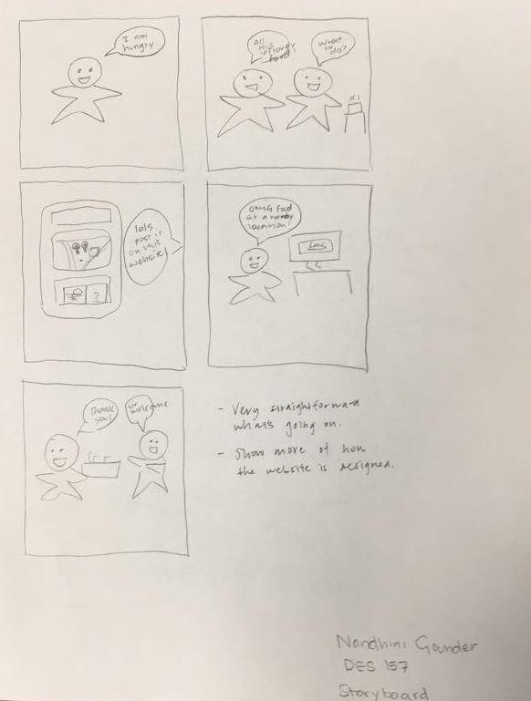
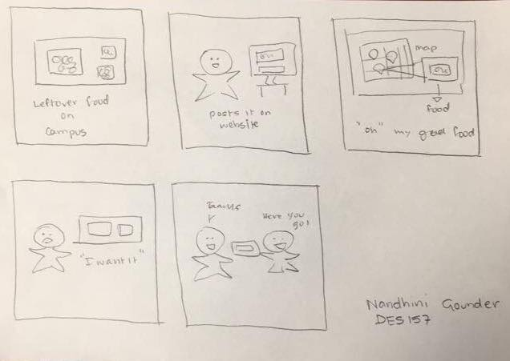

In the first storyboard, I portrayed the motivations behind the usage of the website. In this case, I depicted the two parties, one with the need for food and one with the excess food. Through the usage of this website, both parties are able to have an accessible solution to their needs. The feedback I recieved for the first storyboard was the fact that I needed to create more content for the usage of the actual interface of the website. Currently, I had the user motivations to access the website, but not their interactions once they were using the website.

For the second storyboard, I took the feedback I recieved for the first storyboard and tried to better incorporate this into the different tiles. I tried to portray the interface and its usability in a clearer way. I still incorporated user motivation, but also added their interaction with the interface as well. In this iteration, the rendition of the interface is much clearer as well as the features on this interface including the map and images of the food being given away. The feedback I recieved for this storyboard included just cleaning up the interface and fine-tuning it for the user.
